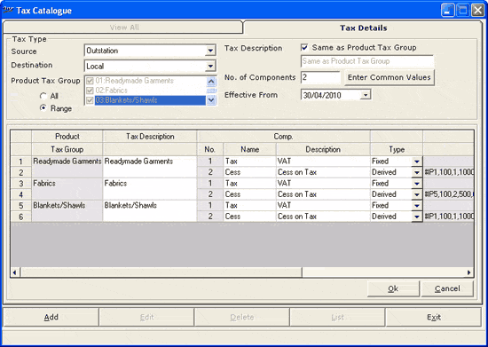
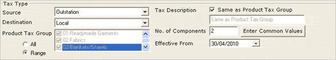
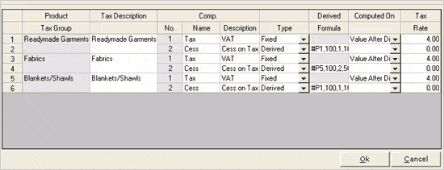

The Tax Catalogue window is as shown.

The Tax Details tab has two sections. The first section Tax Type is as shown.

Source: Select the source of goods from the list. Availability of the source for selection depends on the configuration of your Shoper 9 POS.
Destination: Select the destination of goods from the list. Availability of the destination for selection depends on the configuration of your Shoper 9 POS.
Product Tax Group: Click All to select all tax groups in the list or click Range and select the required ones from the list.
Tax Description: Select Same as Product Tax Group to use the same value as in Product Tax Group. Otherwise, enter the description of the tax catalogue. For example, 4% Sales Tax, Exempted, Apparel, Knitwear, etc.
No. of Components: Tax may be made up of multiple components like Sales Tax, Surcharge, Cess, etc. Enter the number of such components.
Enter Common Values: Click to enter the common values of the components, if you want to enter the same values for many of the selected product taxes. The Common Values group is displayed to accept values.
Effective From: Select the date from which the tax details are to be applied. You may define tax details in advance with a future date as the effective date for each product tax group. During the Day begin process at Shoper 9 POS, when the Shoper Date matches the effective date set, the revised tax rates get applied in sales tax master and subsequent transactions will be with the revised tax rates, irrespective of the system date.
For example, consider a POS location with the following details to understand how the effective date set plays a role while cataloguing tax details:
Shoper Open date: 01/04/2010
Effective date set: 30/04/2010
Here, the revised tax rate gets applied when the Shoper Open date becomes 30/04/2010.
Enter the tax component details in the grid.
If you have entered the common values for the components, the same will be displayed. You may modify the values, if required.

Product Tax Group: The product tax groups selected are listed.
Tax Description: The tax description entered in Tax Description field or copied from Product Tax Group are listed.
Comp. No.: The serial number of each component is displayed.
Component Name: Enter/ modify name of the tax component.
Description: Enter/ modify the description for the component.
Type: Select/ change Fixed or Derived.
Derived Formula: If the component type is derived, then the formula can be framed by pressing F2. Click here for more information.
Computed On: If the component type is fixed, then select the item based on which the tax component is computed.
Tax Rate: Enter/ modify the rate of tax for the component.